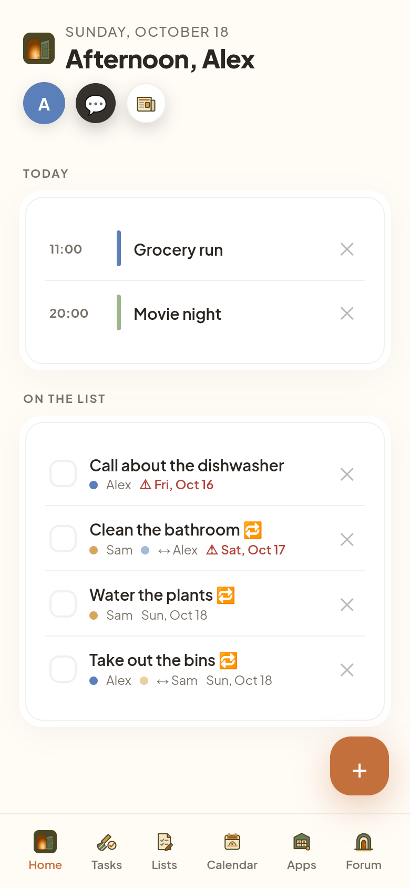
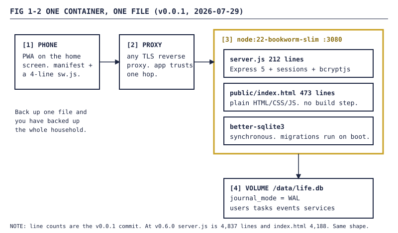
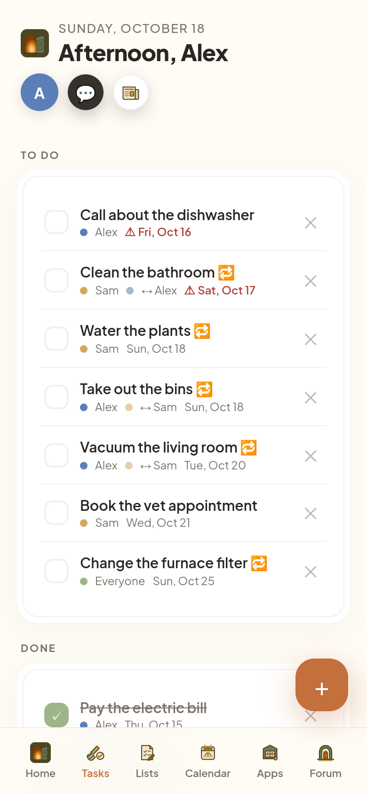
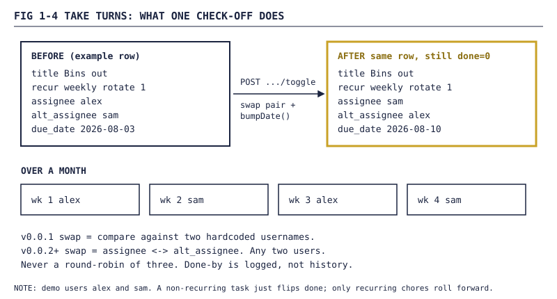
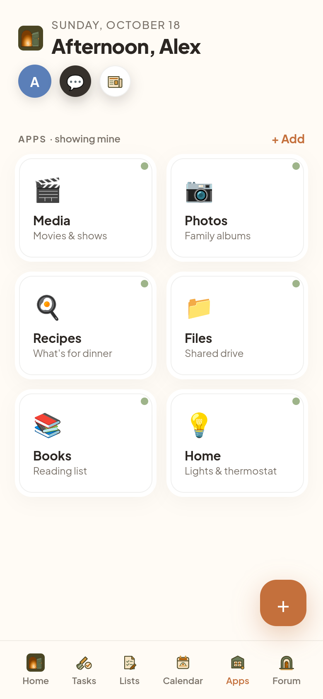
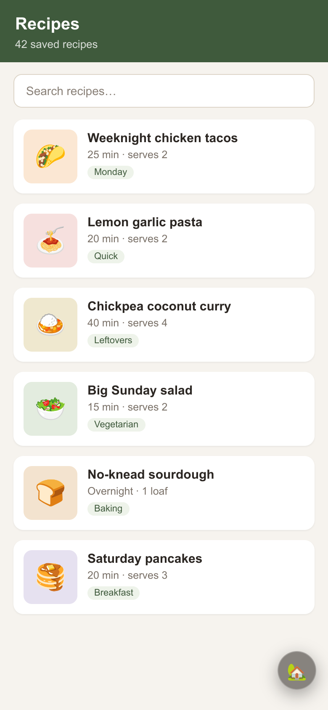
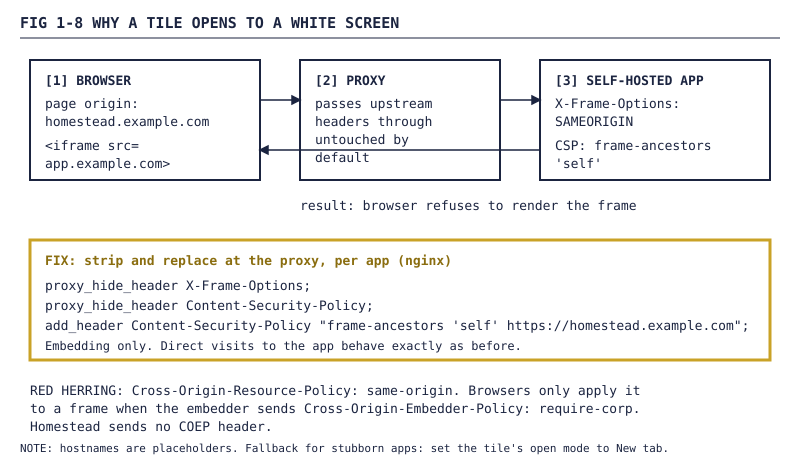

Homestead devlog, Part 1: The pitch. One container, two people, take turns.
How a two-person chores-and-calendar app became a public single-container PWA in July 2026: take-turns chores, an iframe shell with an escape dot, one SQLite file, and the first round of bugs.
FIG 1-0 — The banner we ended up with. It came much later than the code. Part 6 covers the brand.This is the first of seven devlogs about Homestead, a self-hosted, mobile-first app for the people who share a house. Chores, a calendar, a launcher for the other things you self-host, and later a feed, a newspaper and a house agent.
Quick honesty up front, because it matters for the whole series: most of the code was written by AI agents, running through my Paperclip setup. I pitched it, made the design calls, used it, pasted the proxy configs onto my own server, and filed the bug reports (one of those is below, stack trace and all). Where "testing" meant an agent driving a browser instead of a person holding a phone, I'll say so.
1. The pitch
The first public README said it in one paragraph:
A shared-life app for two people. Tasks and chores with take-turns rotation, a calendar, and a launcher grid that opens your self-hosted services in a full-screen iframe shell inside Homestead.
The code existed before the repo did, as a tarball internally called "Homestead v2" from an earlier Claude session. Public numbering started at 0.0.1 anyway. The release work order's first step wasn't "push", it was sanitize: no secrets, no *.db files, seed URLs replaced with https://example.com, design docs kept off the repo. The agent also dropped an unused playwright dependency worth about 500 MB of image.

FIG 1-1 — Home after login on a demo instance (demo data, users alex and sam). This is v0.6.0; v0.0.1 had fewer rooms but the same bones.1.1 Spec table: v0.0.1, 2026-07-29
| Feature | What v0.0.1 did |
|---|---|
| Tasks | Assign to user A, user B, or both. Due date, repeat daily / weekly / monthly. |
| Take turns | A toggle on recurring chores: checking it off hands it to the other person. |
| Calendar | Month grid with per-person colour pips. Tap a day to see or add events. |
| Launcher | Editable tile grid. Long-press to edit. Each tile has an owner and an open mode. |
| Iframe shell | The service opens full-screen inside Homestead, with an escape dot. |
| Auth | bcrypt-hashed passwords, signed session cookies, 90-day rolling expiry. |
| Install | PWA manifest plus a four-line service worker, "enough for PWA install". |
2. The stack: one container, one file
Node 22, Express 5, better-sqlite3, plain HTML/CSS/JS, no build step. In v0.0.1 that was server.js at 212 lines and public/index.html at 473. No bundler, no framework, no ORM. The database came first:
// server.js, v0.0.1 (trimmed)
const DATA_DIR = process.env.DATA_DIR || path.join(__dirname, 'data');
fs.mkdirSync(DATA_DIR, { recursive: true });
const db = new Database(path.join(DATA_DIR, 'life.db'));
db.pragma('journal_mode = WAL');
db.exec(`
CREATE TABLE IF NOT EXISTS tasks (
...
recur TEXT DEFAULT '', -- '', 'daily', 'weekly', 'monthly'
rotate INTEGER DEFAULT 0, -- chore rotation between the two of you
...
`);
// v2 migrations: per-person ownership + open mode ('frame' full-screen shell, 'tab' new tab)
const svcCols = db.prepare("PRAGMA table_info(services)").all().map(c => c.name);
if (!svcCols.includes('open_mode')) db.exec("ALTER TABLE services ADD COLUMN open_mode TEXT DEFAULT 'frame'");
That last bit is the whole migration system: read the column list, add what's missing, run it on every boot. It's still how Homestead migrates. The setup later moved into migrate() in lib/user-model.js, which still opens with db.pragma('journal_mode = WAL').
better-sqlite3 is synchronous, which is fine for one household. Backup is "copy one file".

FIG 1-2 — The whole architecture in v0.0.1. The gold box is the only thing you run.2.1 The Dockerfile, and my first bug report
The second commit landed four minutes after the first: a multi-stage build, because better-sqlite3's node-gyp install hook wants python3, make and g++ even with a prebuilt binary. It also switched to the unprivileged node user, which broke my first deploy:
SqliteError: unable to open database file
at new Database (/app/node_modules/better-sqlite3/lib/database.js:58:27)
at Object.<anonymous> (/app/server.js:10:12)
...
code: 'SQLITE_CANTOPEN'
The node user (UID 1000) could read the mounted /data but couldn't create life.db in it, because the host directory belonged to another user. The agent gave me a chmod workaround the same night, and the next release dropped USER node. The Dockerfile comment explaining why is still there.
3. Take turns
This is the feature the app was built around. A recurring chore, checked off, doesn't become "done". It rolls forward to its next due date and, if take turns is on, changes hands. The v0.0.1 checkbox label: "Take turns (swap between us each time)".
In v0.0.1 the swap was a literal string comparison against the two hardcoded usernames. That lasted four days. Since v0.0.2 each task carries its own pair, assignee and alt_assignee, and the toggle swaps them:
// server.js, v0.6.0 (trimmed)
app.post('/api/tasks/:id/toggle', auth, (req, res) => {
const t = db.prepare('SELECT * FROM tasks WHERE id = ?').get(req.params.id);
...
const wasRotation = !t.done && t.recur;
if (wasRotation) {
let assignee = t.assignee;
let alt = t.alt_assignee;
if (t.rotate && alt) {
const tmp = assignee;
assignee = alt;
alt = tmp;
}
db.prepare('UPDATE tasks SET due_date=?, assignee=?, alt_assignee=?, done=0, done_by=?, done_at=datetime(\'now\') WHERE id=?')
.run(bumpDate(t.due_date, t.recur), assignee, alt, req.session.user.username, t.id);
} else {
...
bumpDate() adds a day, seven days or a month, and hasn't changed since the first commit. There's no history table: done_by and done_at get overwritten each time. Whose turn it is lives in one column.

FIG 1-3 — The chores list on a demo instance, including a take-turns chore (demo data, users alex and sam).
FIG 1-4 — One check-off, one swap, one bumped date. Over a month it alternates. That's it.NOTE The v0.0.2 changelog says rotation "works for any number of assigned users". The agent's own close report was more accurate: "for any two users". It's a pair swap. A house of three can rotate any two of them, but there's no round-robin.
4. Two hardcoded people, then N
v0.0.1 seeded exactly two users from two env vars. On 2026-08-02 I asked whether we needed per-person seed passwords at all, since we'd be linking to Authentik eventually. Maybe just an admin password?
The agent pointed out the names weren't only in the seed. They were in the rotation compare, CSS variables, three-button pickers, name and colour maps. So the choice was: keep it a couples app on purpose, or go generic now. My answer:
might as well have a little pain now, to save massive pain later.
v0.0.2 went out that same night. One admin user seeded from ADMIN_PASSWORD, who creates everyone else from Settings → Users. Pickers list every user plus "Everyone". The container runs as root. And v0.0.1 was retired: release deleted, tag removed. The migration shows the other half of the boot-time rule, reshaping old data in place:
// v0.0.2 migration: tasks.alt_assignee + shift legacy "both" → "all"
const taskCols = db.prepare("PRAGMA table_info(tasks)").all().map(c => c.name);
if (!taskCols.includes('alt_assignee')) db.exec("ALTER TABLE tasks ADD COLUMN alt_assignee TEXT DEFAULT NULL");
db.exec("UPDATE tasks SET assignee = 'all' WHERE assignee = 'both'");
db.exec("UPDATE events SET owner = 'all' WHERE owner = 'both'");
db.exec("UPDATE services SET owner = 'all' WHERE owner = 'both'");

admin.
NOTE The v0.0.2 close report flagged its own gap:
POST /api/userslooked up the caller and never checkedis_admin, so any logged-in user could create accounts. The endpoint went away a week later in v0.0.5, when users started coming from the identity provider. That's Part 2.
5. The launcher and the escape dot
The launcher is a grid of tiles: name, URL, emoji, owner, and an open mode of "New tab" or "Full screen".

FIG 1-6 — The Apps launcher on a demo instance (demo data, users alex and sam).A full-screen iframe in an installed PWA has no browser chrome, so getting out is the problem. The answer was the escape dot: a 46 px 🏡 circle over everything. Tap it to go home. Drag it and it snaps to the nearest side. After 2.5 seconds it fades. Same code in v0.6.0 as in v0.0.1:
// public/index.html
dot.addEventListener('pointermove',e=>{
if(!drag)return;
const dx=e.clientX-drag.x,dy=e.clientY-drag.y;
if(Math.abs(dx)+Math.abs(dy)>6)drag.moved=true;
...
});
dot.addEventListener('pointerup',e=>{
const wasTap=drag&&!drag.moved;drag=null;
if(wasTap){closeShell();return}
const snapLeft=dot.offsetLeft+23<innerWidth/2;
dot.style.left=snapLeft?'8px':(innerWidth-54)+'px';
dotIdleTimer=setTimeout(()=>dot.classList.add('idle'),2500);
});
Six pixels is the line between a tap and a drag. Closing sets the frame back to about:blank, so whatever was playing stops.

FIG 1-7 — A service open full-screen in the iframe shell on a demo instance, escape dot visible.In September an agent added an 8-second fallback overlay: "This app didn't load. It may be unreachable or blocking embedding."
5.1 The frame-header gotcha
Here's the catch: most self-hosted apps tell browsers not to let anyone embed them, with X-Frame-Options: SAMEORIGIN or a CSP frame-ancestors 'self'. Homestead is a different origin, so you get a white rectangle. The fix lives in your reverse proxy. The README has had this since v0.0.1:
location / {
proxy_hide_header X-Frame-Options;
proxy_hide_header Content-Security-Policy;
add_header Content-Security-Policy "frame-ancestors 'self' https://your-hostname";
# ...your usual proxy_pass / proxy_set_header lines...
}
I made it part of the deploy's definition of done. Not done until the tile the household cared about most opened full-screen on a phone, escape dot working, session surviving. If it still refused to frame after the header strip:
that is a BLOCKER to report, not a fall-back-to-tab shrug
Homestead came up on my server on 2026-08-03. My comment, minus the address: "HOMESTEAD IS LIVEEEEEEEEEEEEE". I asked whether the strip would break normal access to those apps. It doesn't; those headers only govern embedding. On 2026-08-09 I pasted it into the proxy config for four apps.

FIG 1-8 — Why a tile opens to a white screen, and the per-app proxy fix. The red herring at the bottom cost a month.The coda: in September I reported that the same tile "either errors out or doesn't load correctly". The leading theory, for weeks, was the app's Cross-Origin-Resource-Policy: same-origin header, which the strip never touched. In October an agent finally pointed real browsers at it from Homestead's real origin: Chromium at phone size loaded the frame in 1.4 s on fast 4G, zero console errors, and WebKit with an iPhone 15 profile rendered it too. Nobody was holding a phone. Browsers only enforce CORP on a frame when the embedder sends Cross-Origin-Embedder-Policy: require-corp, and Homestead sends none. The September symptom lined up with Homestead itself having outages (Part 7).
6. Small fixes: 404s, health, a crash
v0.0.3 (2026-08-04). The SPA fallback served the 39 KB index.html for every unknown path, including /api/*, /favicon.ico and /robots.txt. Now those get a JSON 404, the SVG icon and a real Disallow: /. GET /api/logout returns 405, so an <img src="/api/logout"> can't log you out, and /api/health runs a live SELECT 1.
v0.0.4. /api/version reads package.json at load time, and the Dockerfile's runtime stage didn't copy it. Every container since v0.0.3 crashed on boot with MODULE_NOT_FOUND. My reverse proxy then couldn't resolve Homestead's upstream, refused to start, and took every other site behind it down too. One COPY line. Not the last missing COPY (Part 7).
v0.1.1, per-service health checks. The changelog's reason: someone taps a tile, gets a white iframe from a crashed backend, and decides all of Homestead is broken. Now each tile is polled, and a down tile shows a red dot and "down since HH:MM":
| Probe result | Status |
|---|---|
| 2xx / 3xx | up |
| 401 / 403 | up (an auth wall is a healthy app) |
| 5xx, 5 s timeout, connection refused | fail |
| 1 fail | still up, no flapping |
| 2 consecutive fails | down, down_since stamped |
| any up after down | recovered, down_since cleared |
HEAD first, GET on 405 or 501. One setInterval per tile, default 60 seconds, 0 to opt out.
WARNING While pulling excerpts for this post, an agent found a small bug.
nextState()setstransitioned: trueon recovery as well as on failure (the tests assert both). But the hook that fires isonDownTransition, and the server's handler always sends "name is down". As far as I can read it, when a service comes back, admins get another "is down" push readingDown since null. Not fixed as of v0.6.0.
7. Push reminders and quiet hours
v0.1.0 (2026-08-09) added web push: standard VAPID, no Firebase. On iPhone it needs iOS 16.4+ and the app on the home screen. One notify(userId, payload) primitive, three categories (chore_due, take_turns, system), and per-user quiet hours defaulting to 21:00–08:00, including the window that wraps past midnight:
// server.js, v0.6.0
function isInQuietHours(prefs, now) {
const h = now.getHours();
const s = prefs.quiet_start_hour, e = prefs.quiet_end_hour;
if (s === e) return false;
if (s < e) return h >= s && h < e;
return h >= s || h < e;
}
getHours() is server-local, so the container's timezone is the household's.
Reminders run on a 30-minute tick: "Due today", "Overdue", and for take-turns chores due today:
await notify(u.id, {
title: `Your turn: ${t.title}`,
body: `${t.title} is up today. Tap to mark done and pass it on.`,
...
category: 'take_turns',
});
At most one push per user per category per day, and the dedupe only counts pushes actually delivered. So a reminder held back by quiet hours isn't dropped; a later tick sends it. Take-turns pushes are sticky on the phone (requireInteraction). force: true skips quiet hours, and inside the server only the health checker uses it, pushing every admin when a tile goes down. The comment above it:
an outage is worth waking up for.
8. End of Part 1
Where things stood after the first two weeks:
- A public repo and a GHCR image,
ghcr.io/phattbeats/homestead, built from tags. - One container, one SQLite file in WAL mode, migrations on every boot, no build step.
- Take-turns chores: a recurring task that rolls forward and swaps hands.
- A generic user model with an
adminseed, after "a little pain now". - A launcher with a full-screen iframe shell, a draggable escape dot, and a README section on the proxy headers that make or break it.
- Health checks on every tile, push reminders, and quiet hours that delay pushes instead of dropping them.
- First bugs: a database the container couldn't create, a 39 KB favicon, and a missing
COPYthat took down the proxy.
Next, Part 2: the front door. Logins, invites, a session secret the server refuses to boot without, and Authentik single sign-on for a house that wanted one login for everything.